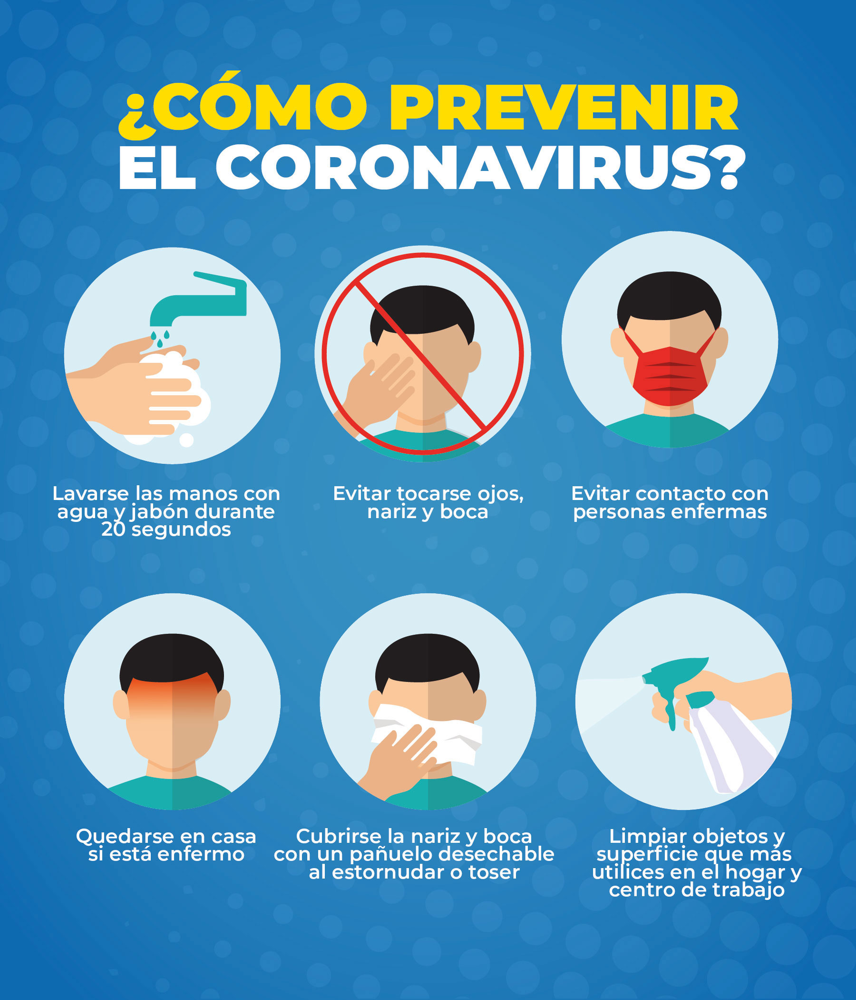
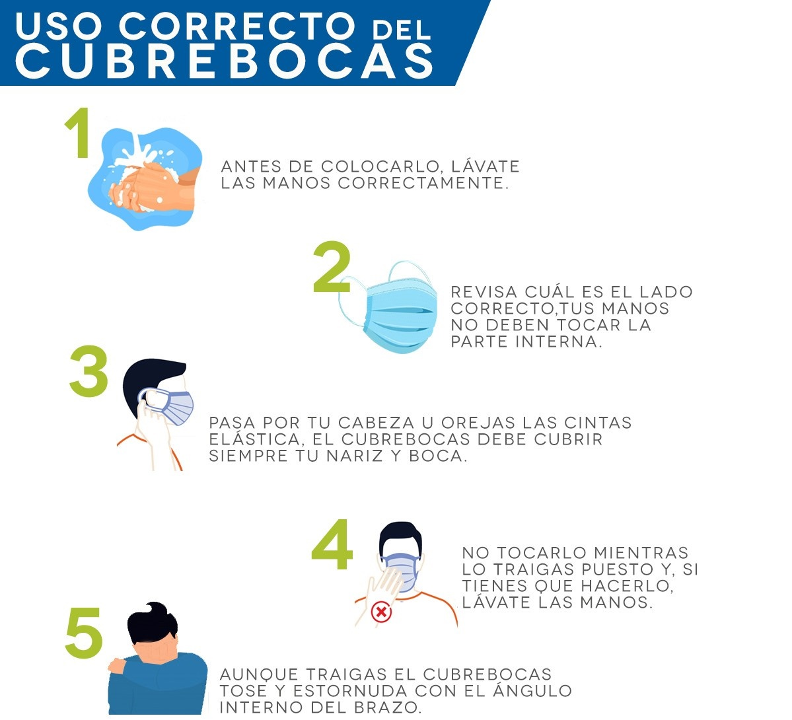
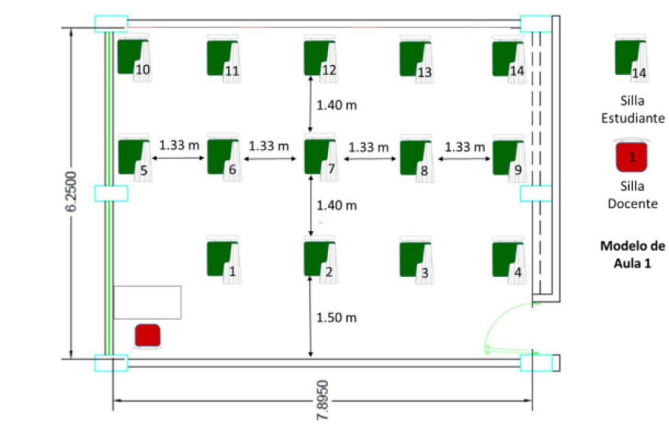
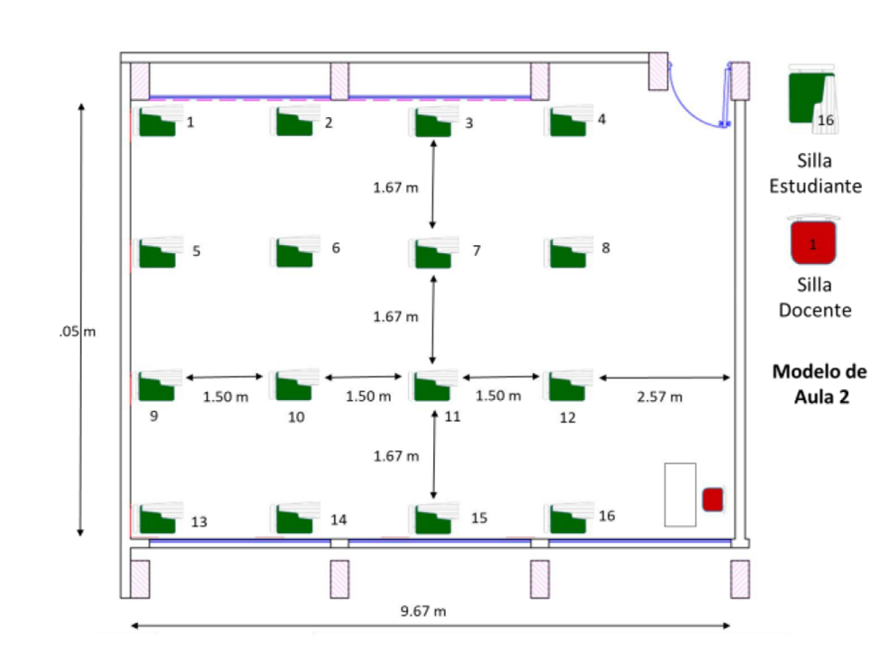

Contingencia Covid-19
Coronavirus
Los coronavirus son una extensa familia de virus que pueden causar enfermedades tanto en animales como en humanos. En los humanos, se sabe que varios coronavirus causan infecciones respiratorias que pueden ir desde el resfriado común hasta enfermedades más graves como el síndrome respiratorio de Oriente Medio (MERS) y el síndrome respiratorio agudo severo (SRAS). El coronavirus que se ha descubierto más recientemente causa la enfermedad por coronavirus COVID-19. (OMS: 2020)
COVID-19 La COVID-19 es la enfermedad infecciosa causada por el coronavirus que se ha descubierto más recientemente. Tanto el nuevo virus como la enfermedad eran desconocidos antes de que estallara el brote en Wuhan (China) en diciembre de 2019. (OMS: 2020).
Medidas para la prevención del COVID-19, en base a información extraída de la página oficial de la OMS:
Lávese las manos a fondo y con frecuencia usando un desinfectante a base de alcohol o con agua y jabón. Lavarse las manos con agua y jabón o usando un desinfectante a base de alcohol mata los virus que pueda haber en sus manos.
Mantenga una distancia mínima de 1 metro (3 pies) entre usted y cualquier persona que tosa o estornude. Cuando alguien tose o estornuda, despide por la nariz o por la boca unas gotículas de líquido que pueden contener el virus. Si está demasiado cerca, puede respirar las gotículas y con ellas el virus de la COVID-19, si la persona que tose tiene la enfermedad. Evite tocarse los ojos, la nariz y la boca. Las manos tocan muchas superficies y pueden recoger virus. Una vez contaminadas, las manos pueden transferir el virus a los ojos, la nariz o la boca. Desde allí, el virus puede entrar en su cuerpo y causarle la enfermedad. Tanto usted como las personas que les rodean deben asegurarse de mantener una buena higiene de las vías respiratorias. Eso significa cubrirse la boca y la nariz con el codo doblado o con un pañuelo de papel al toser o estornudar.

Imagen 1. Recomendaciones para prevenir el coronavirus
Garantice la seguridad de las operaciones en la escuela
El alumno y docentes:
Una vez dentro de las instalaciones de la institución, antes de accesar a cualquier laboratorio o salón lavarse las manos en las estaciones para el lavado de manos con agua y jabón y, disponga un gel con contenido de alcohol para las manos (desinfectante de manos) así como en las salidas.
A continuación, la forma correcta de lavarse las manos
Paso 1: Mojar las manos con agua corriente segura.
Paso 2: Aplicar suficiente jabón para cubrir las manos húmedas.
Paso 3: Frotar todas las superficies de las manos –incluyendo el dorso, entre los dedos y bajo las uñas– durante al menos 20 segundos.
Paso 4: Enjuagar las manos a fondo con agua corriente.
Paso 5: Secarse las manos con un paño limpio y seco, una toalla de un solo uso un secador de manos, según sea el caso.

Imagen 2. Tecnica de lavado de manos
Mantener la sana distancia dentro de los laboratorios y salones, los asientos de las alumnas y alumnos deberán estar y mantenerse a una distancia libre de 1.5 metros hacia sus cuatro lados. Esto debe preverse también en los espacios destinados para los docentes y oficinas administrativas de la escuela.
Mantenerte con cubre bocas en áreas cerradas, salones, laboratorios, baños y oficinas.

Imagen 3. Uso correcto de cubrebocas
En la entrada y salida sigue las señalizaciones del sentido de tránsito para mantener la circulación ordenada en el interior de salones y laboratorios evitando la saturación en las vías de acceso y movilidad al interior.
La distribución del mobiliario escolar en las aulas de clase dependerá de las dimensiones de los salones de cada Unidad Académica, por tal motivo, se presenta la estructuración de mobiliario con la aplicación de la medida de prevención de sano distanciamiento físico entre las personas.

Imagen 4. Distancia social
En los dos modelos de aulas deberán aplicarse los protocolos de limpieza y desinfección previa al inicio de clases y al finalizar la jornada laboral. En los intervalos de cada tres clases, las ventanas de las aulas deberán de abrirse, garantizando que el espacio sea ventilado de manera natural.

Imagen 5. Modelo de aulas
● Limpiar y desinfectar las superficies que se tocan con frecuencia en las áreas de trabajo, salones de clase, laboratorios y talleres, como cerraduras y manijas de puertas, llaves de lavabos, pasamanos, barras de agarre, escritorios, pupitres, equipo de cómputo y de oficina, gabinetes y lockers, equipo de laboratorio, entre otros, dentro de las instalaciones de las unidades académicas.
● Los productos químicos de limpieza a emplear son a base de hipoclorito de sodio con concentraciones de al menos 0.5% o con productos autorizados por las instancias de salud estatal y federal que cumplan con las medidas de protección al ambiente. El área de servicios generales coordinará y vigilará el cumplimiento de esta medida de prevención.
● Limpieza y desinfección de filtros de aires acondicionados, vigilando en todo momento que la actividad se realice cuando menos cada quince días, para lo cual, se implementará una programación de la medida de prevención para cada unidad académica por el área de mantenimiento.
● Para minimizar el riesgo de otras enfermedades asociadas al agua y garantizar agua limpia en los lavabos para el lavado de manos con medida de prevención de contagios del COVID-19, todos los sistemas de almacenamiento de agua potable de las Unidades Académicas se limpiarán y desinfectarán, previo al regreso de actividades en el contexto de la nueva normalidad por personal del área de mantenimiento.